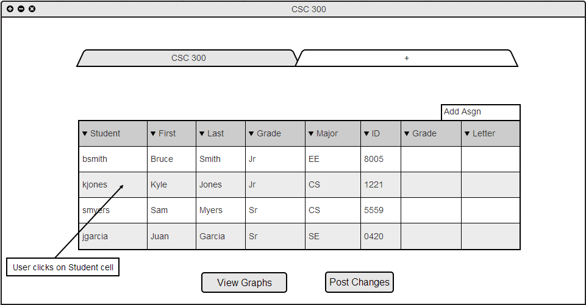
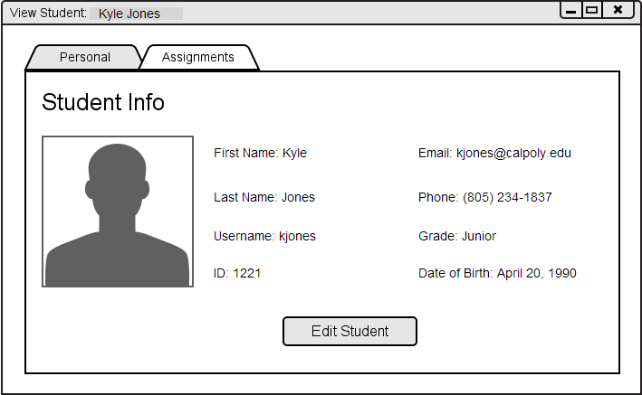

The user has multiple options when viewing extra student information.
The user may view extra student information on the main roster by using the Expand/Collapse spreadsheet features. Please refer to Section 2.5.3 Expand/Collapse Spreadsheet for more information on these features.
To view a particular student's information, the user clicks on a students' cell in the spreadsheet view. This is shown in Figure 2.3.4.A below.

Figure 2.3.4.A: Click on student cell from spreadsheet.
The system responds to the user's click by displaying the View Student dialog, as shown in Figure Figure 2.3.4.B below

Figure 2.3.4.B: View Student.